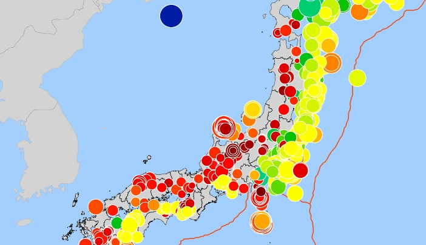

計測震度データベースでは、気象庁の「報道発表資料」「地震・火山月報」に掲載されている、有感地震の各観測点で観測した計測震度の情報を表示します。
計測震度は、特定の地点における揺れの強さを示す指標であり、これをもとに震度が決定されます。計測震度を見ることにより、「震度５強寄りの震度５弱」などの情報を読み取ることができます。
このサイトは、地震情報の高度利用者向けに作成しています。地震や防災情報の詳しい知識が必要です。一般向け、最新の情報は気象庁 震度データベースにて確認できます。

Copyright 2023-2026 iku55. Source codes are licensed under the MIT License.
このサイトはGoogleアナリティクスを使用しています。
情報の正確性は保証しません。不正確なデータを確認した場合はこちらのフォームからご報告ください。